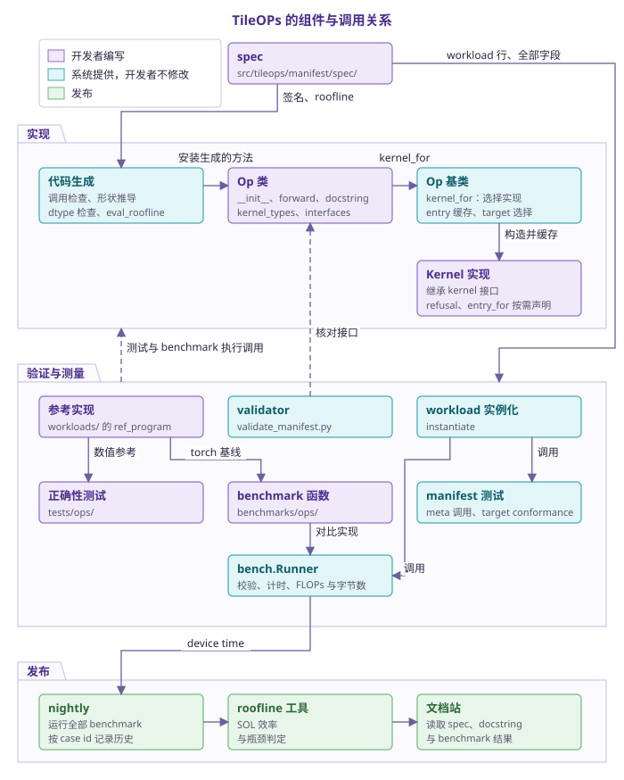
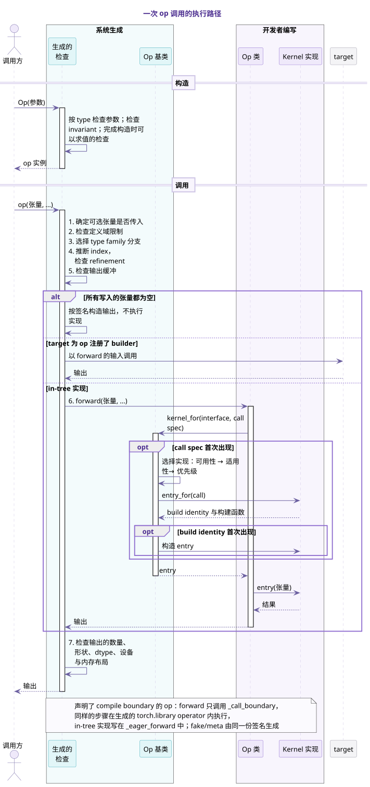
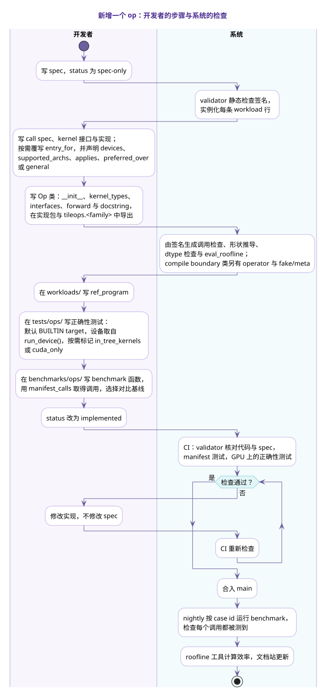

读写 manifest¶
manifest 描述 TileOPs 每个 public op 的外部契约，由 src/tileops/manifest/spec/ 下的 YAML 文件组成。每个 op 在 manifest 中占一个条目，这个条目称为该 op 的 spec。op 的实现以 spec 为依据，validator 在 CI 中检查实现与 spec 是否一致；两者不一致时，修改的是实现。
开发者为一个 op 写好 spec 之后，以下内容都由系统根据 spec 生成：
- 构造与调用时的检查、输出形状推导与 dtype 检查；
- manifest 测试与 benchmark 所用的调用及其输入；
- 每次调用的 FLOPs 与字节数；
- 文档站中取自 spec 的内容，例如支持矩阵。
开发者需要编写的是：
- kernel；
- op 类，包括
__init__、forward与 docstring； - 数值参考与正确性测试；
- benchmark 的对比基线。
本页前三节依次说明系统由哪些组件组成、一次调用如何执行，以及新增一个 op 的完整流程。
1. 系统概览¶
TileOPs 的组件分为四层：
- 声明层：spec。
- 实现层：由 spec 生成的代码，以及开发者编写的 op 与 kernel。
- 验证与测量层：测试、benchmark 与 validator。
- 发布层：nightly、roofline 工具与文档站。
下图中紫色的组件由开发者编写，青色的组件由系统提供，浅绿色的组件属于发布层。

表 1 开发者编写的部分
| No. | 部分 | 位置 | 内容 |
|---|---|---|---|
| 1 | spec | src/tileops/manifest/spec/<family>.yaml |
签名、workload 行、roofline 公式 |
| 2 | kernel 接口与实现 | src/tileops/kernels/；kernel 接口与 call spec 通常放在 family 的 call_spec.py 中，只有一个 kernel 文件的 family 写在该文件里 |
kernel 接口规定 call spec 的类型与 forward 的参数；实现是 Kernel 的子类，并继承相应的 kernel 接口。默认的 entry_for(call) 直接用 call spec 构造实现，不能准确表示构造参数时再覆写它 |
| 3 | Op 类 | src/tileops/ops/，并由 tileops.<family> 导出 |
与 params 一致的 __init__；kernel_types（键到实现类）与 interfaces（调用位置到 kernel 接口）；在 in-tree 实现中（通常是 _eager_forward，见下文 compile boundary）构造 call spec，并通过 kernel_for 取得要调用的 entry；Google 风格的 docstring，文档站的 API 参考由它生成 |
| 4 | 参考实现 | workloads/ |
以该 op 命名的 workload 类，或 family 共用的参数化 workload 类上的 ref_program，以及 workload 行无法确定的输入构造 |
| 5 | 正确性测试 | tests/ops/ |
数值容差，以及覆盖 kernel 各分支所需的形状 |
| 6 | benchmark 函数 | benchmarks/ops/ 中该 op 所属模块的 benchmark 文件，没有合适的文件时再新增 |
以 manifest_calls(Op) 参数化测试函数，并选择对比基线，例如 torch 参考实现与其他库的 kernel |
以下几项只在需要时编写：
- 内联公式无法表达代价时，在
tileops.perf.formulas中编写 rooflinefunc； - op 的 FLOPs 属于矩阵乘收缩、最优实现应使用 tensor core 时，覆写
compute_roof()。它表示最优实现应当使用的计算单元，与当前 kernel 实际使用的单元无关； - 同一个 kernel 接口有多个实现时，在各实现上声明它服务哪些调用（
applies）与能在哪些设备上运行（devices、supported_archs）；实现之间的适用范围有重叠时，用preferred_over声明哪个优先，兜底的实现声明general = True，见如何为 op 新增 kernel； - 外部 backend 不修改 op，而是在构造 op 实例之前调用
tileops.backend.register_implementation("<Op 类名>", "<key>", 实现类)，为某个 kernel 接口增加实现。第一个参数是 manifest 中的 op 名，key必须是该 op 尚未使用的新键；新增的实现只进入之后构造的实例，并在实例构造时接受 kernel 接口检查，见 backend 如何接入 TileOPs； - 复合 op 在类上声明
delegate_types与kernel_types，与 spec 的composition对应； - 支持
fullgraph=True的 op 声明compile_boundary = True：forward只调用_call_boundary，in-tree 实现写在_eager_forward中，并在tests/compile_contract.py中登记冷编译测试。
表 2 系统提供的部分
| No. | 组件 | 输入 | 为开发者完成的工作 |
|---|---|---|---|
| 1 | 代码生成 | 签名、roofline |
构造检查、包裹 forward 的调用检查、_infer_output_shapes、_validate_dtypes 与 eval_roofline()；声明了 compile boundary 的类还会得到 torch.library operator 与 fake/meta 函数 |
| 2 | Op 基类 | kernel_types、interfaces、call spec |
构造时检查每个实现是否符合其 kernel 接口；调用时选择实现，构造并缓存 entry；子 op 的持有（delegate_for）、target 派发与 autotune |
| 3 | workload 实例化 | workload 行 | 将每条行按 dtype_cases 展开为调用，并生成符合调用的输入张量，包括形状、dtype、参数与 metadata 的取值 |
| 4 | ManifestBenchmark |
调用与 op | 计时、生成 case id、从 eval_roofline() 取得 FLOPs 与字节数，并以 op 名记录结果 |
| 5 | manifest 测试 | 全部 spec | 在 meta 张量上执行每个调用；检查 target conformance；检查公开 API 与 manifest 一致；检查 roofline 字节数与签名的推导一致 |
| 6 | validator | 全部字段 | 静态检查签名；对 implemented 的 op 核对 __init__、forward 与 composition |
| 7 | nightly | benchmark | 每晚运行全部 benchmark，检查每个调用都被测到，并按 case id 记录历史数据 |
| 8 | roofline 工具 | device time、GPU profile | 计算 SOL 效率，判定瓶颈 |
| 9 | 文档站 | spec、docstring、benchmark 与 roofline 结果 | 生成 API 参考、支持矩阵与性能页面 |
manifest 测试与 benchmark 所用的调用，包括形状、dtype 与输入张量，都由 workload 行生成，benchmark 函数只决定与哪些实现对比。正确性测试另选能覆盖 kernel 各分支的形状；普通随机张量不能满足输入的取值范围时，在 workload 类中覆写 gen_inputs()。
2. 一次调用的执行路径¶
一次 op 调用分为构造与调用两个阶段。下图中青色的参与者由签名生成或由 Op 基类提供，紫色的参与者由开发者编写。

- 构造阶段，生成的检查按
type检查参数，并完成构造时已经可以求值的检查。 - 调用阶段，生成的检查先确定输入、选择分支并推断 index，然后才调用开发者编写的实现；实现返回之后，再检查输出的数量、形状、dtype、设备与内存布局，并核对
out与alias输出是否就是对应的张量对象。因此实现中不需要重复 spec 已经声明的检查。 - 实现通过
kernel_for(interface, call)取得要调用的 entry，通常就是一个 kernel。同一个 call spec 再次出现时，Op 基类只做一次查找；首次出现时，Op 基类在该 kernel 接口的实现中选出唯一一个，由它的entry_for(call)返回 build identity 与构建函数，在同一个 kernel 接口内，同一实现类、相同 build identity 的 entry 只构造一次。选择规则见调用与校验 2。 - 声明了 compile boundary 的 op，
forward只调用生成的_call_boundary，in-tree 实现写在_eager_forward中。 - 某个 target 通过
register_kernel_builder为 op 注册了 builder 时，生成的检查之后调用 target 返回的 kernel，op 的forward不执行。通过register_implementation增加的实现属于 in-tree 路径，仍由forward经kernel_for选中。 - 如果一次调用写入的所有张量（各输出与被写入的输入）都不含元素，in-tree 实现与 target 都不执行：新的输出按检查过的形状与 dtype 在调用设备上创建，
out与被写入的输入原样返回。输入为空而输出不为空时，照常执行实现。
各检查的细节见调用与校验 1。
3. 新增一个 op 的流程¶
下图左侧是开发者的步骤，右侧是系统在各步骤之后执行的生成与检查。

- spec 以
status: spec-only提交。此时 validator 只做静态检查，不要求代码存在。 - 开发者编写 kernel 与 op 类，并在实现所在的包（例如
src/tileops/ops/reduction/__init__.py）与公开模块src/tileops/<family>.py中导出 op，两处的__all__都要包含它。op 类一旦存在，由签名生成的方法就会加入这个类。 - 开发者编写参考实现、正确性测试与 benchmark 函数。family 或模块已有对应文件时，在已有文件中添加。正确性测试默认使用
BUILTINtarget，测试设备取自workloads.device.run_device()；依赖 in-tree kernel 状态的测试标记pytest.mark.in_tree_kernels或显式传入target=BUILTIN；无论 target 为何都需要 CUDA 的测试标记pytest.mark.cuda_only；判断设备是否可用时调用workloads.device.run_device_available()，而不是torch.cuda.is_available()。benchmark 同样接受--tileops-target与--tileops-device选项，默认使用BUILTIN；benchmark 用 CUDA events 与 CUPTI 计时，只在 CUDA 设备上运行。详见设计文档 Testing。 status改为implemented后，validator 开始核对代码与 spec，CI 运行 manifest 测试与 GPU 上的正确性测试。检查失败时修改实现，不修改 spec。- 合入 main 之后，nightly 按 case id 运行 benchmark，roofline 工具计算效率，文档站随之更新。
4. spec 与实现的关系¶
spec 是 op 外部契约的依据，实现以 spec 为准。
- spec 依据权威参考编写，例如 op 在语义上所参照的 PyTorch API，而不是从 TileOPs 现有的代码反推。
- 只有实现符合 spec 时，
status才是implemented。已经implemented的 op 被发现与 spec 不符时，status改回spec-only，并修改实现，而不是修改 spec。 - 运行时检查由签名生成，实现 op 时不需要手写这些检查。生成的检查有误时，应修复代码生成或 validator，而不是在 op 中绕开它们。
- 依赖代码的检查只对
spec-only的 op 跳过，没有按 op 关闭某项检查的开关。
5. spec 的内容与范围¶
spec 描述 op 的外部契约，其内容分为五组字段：
表 3 spec 的五组字段
| No. | 内容 | 字段 | 说明所在 |
|---|---|---|---|
| 1 | 类型签名 | signature |
写一个 spec |
| 2 | 副作用 | 张量上的 mutated、write_only、buffer、alias |
扩展写法 6 |
| 3 | 测试用例 | workloads，以及张量上的 values、requires |
写一个 spec 8、扩展写法 7 |
| 4 | 代价模型 | roofline |
写一个 spec 9 |
| 5 | 复合 op 的内部结构 | composition |
扩展写法 10 |
后四组字段都以签名为基础：
- 副作用标注在签名中的张量上；
- workload 行是签名的具体取值；
- 代价公式使用签名中的名字。
以下内容属于实现，由代码决定，不出现在 spec 中：
- 源码路径；
- kernel 的选择，以及多个 kernel 的调用顺序；
- 累加 dtype、workspace、tile 大小与 autotune 配置。
6. 文件组织¶
- YAML 文件位于
src/tileops/manifest/spec/。每个 family 对应一个文件<family>.yaml；规模较大的 family 拆分为若干个<family>_<shard>.yaml。 - 每个文件是从 op 名到 spec 的非空映射，文件中每个 spec 的
family都与文件名所表示的 family 相同。 - 加载时所有文件合并为一份 manifest。同一个 op 名重复出现，或者文件不符合上述命名规则，都会报错。
- 多个 spec 共用的 ADT 定义在
spec/types.yaml中，见扩展写法 3。 - spec 的键是 op 的 Python 类名，validator 要求
cls.__name__与键完全相同。键以FwdOp或BwdOp结尾，表示变体的词写在方向后缀之前，例如GroupedQueryAttentionPagedFwdOp。
7. 本指南的内容¶
表 4 本指南各页的内容
| No. | 页面 | 内容 |
|---|---|---|
| 1 | 概念 | 描述 op 类型所用的概念 |
| 2 | 写一个 spec | 大多数 spec 所需字段的写法 |
| 3 | 扩展写法 | 可选输入、随参数变化的形状、副作用、metadata 张量等情况的写法 |
| 4 | 调用与校验 | 调用时基于签名的检查、validator 的检查项，以及不被接受的写法 |
| 5 | 示例 | manifest 中的真实 spec |
字段的完整取值、kind 映射、表达式语言等参考表收录在设计文档 Manifest 中，本指南不再重复。